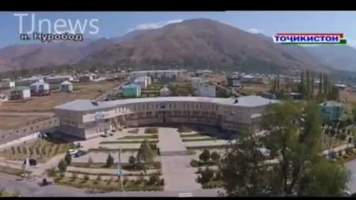
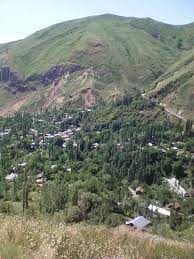
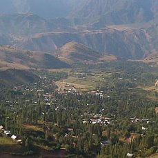
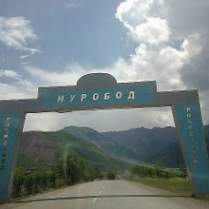
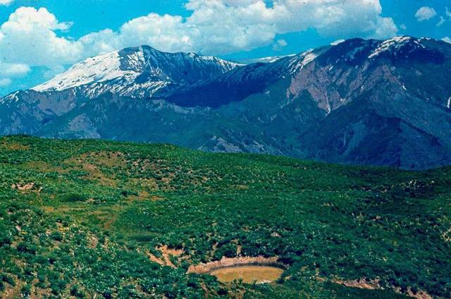
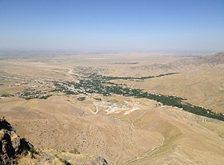
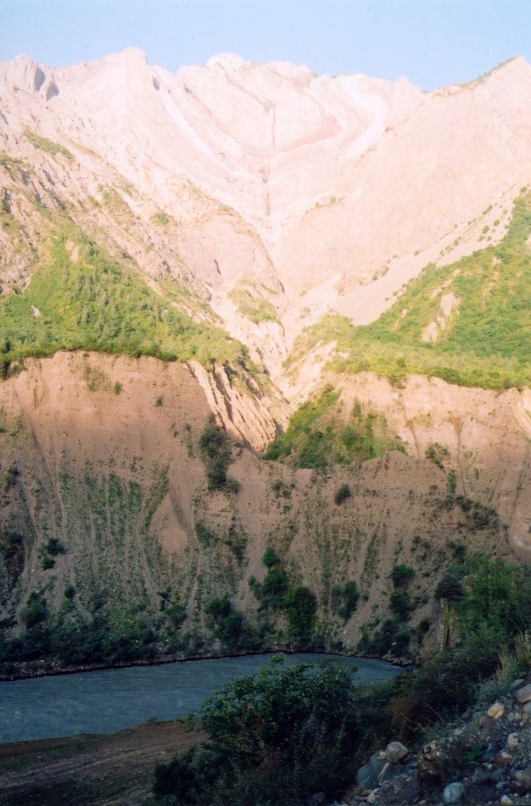
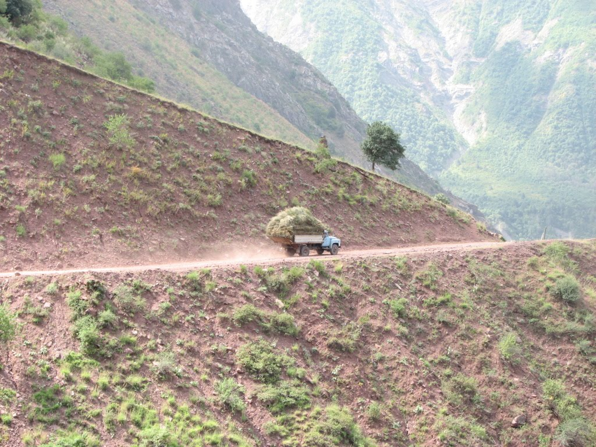
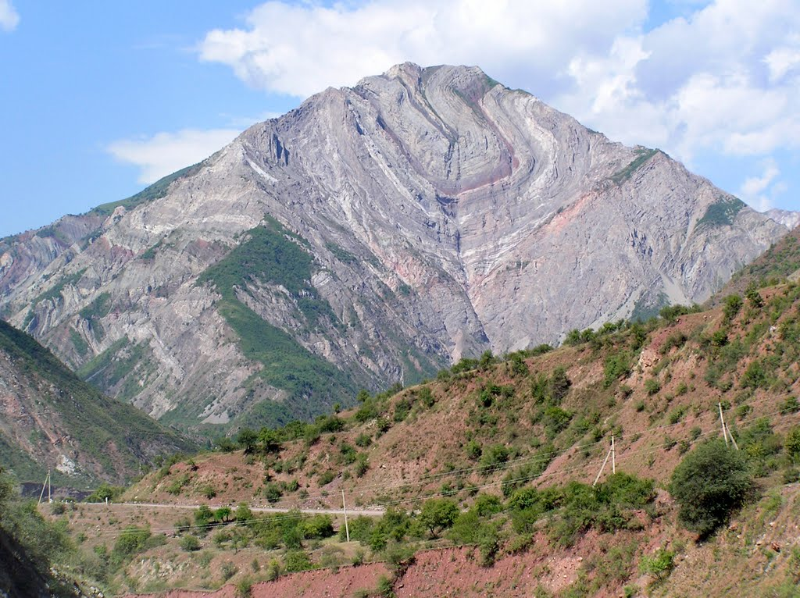
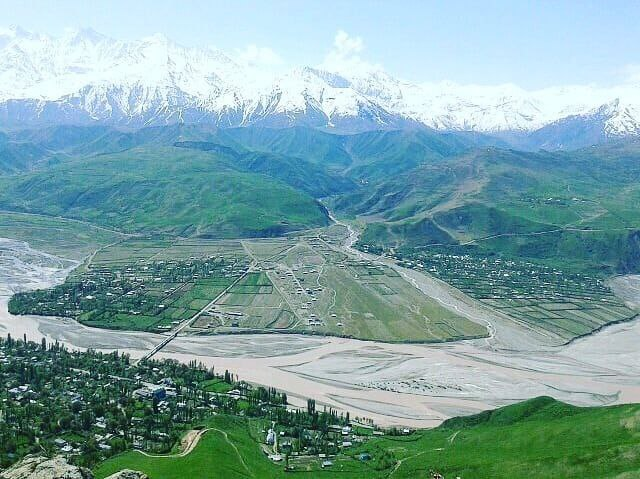

Нурабадский район, расположенный в центре Таджикистана – один из районов республиканского подчинения. Его земли занимают часть территории Раштской долины, которую окружают крутые горные хребты, достигающие и превышающие 4 тысячи метров в высоту. На территории Нурабадского района крупная река Сурхоб впадает в Вакш, образуя довольно обширную для этого региона долину. Здесь сконцентрировано большинство поселений района, а том числе и районный центр посёлок Нурабад. С античных времён по этой территории проходили торговые пути – ответвления Шёлкового пути. В средневековье регион был известен как Дарбанд – по названию крепости, охранявшей проход по долине и часто служившей пограничной заставой разных держав древности. В 1936 году основан Дарбандский район, переименованный в Комсомолобадский. В 1991 году району вернули первоначальное название, а в 2003 году снова переименовали – в Нурабадский район. Район пересекает государственная автотрасса М41, соединяющая Душанбе с Горно-Бадахшанской автономной областью. Регион богат природными достопримечательностями.
         